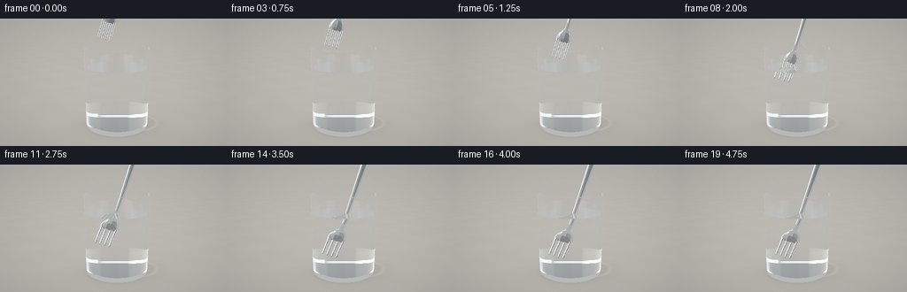
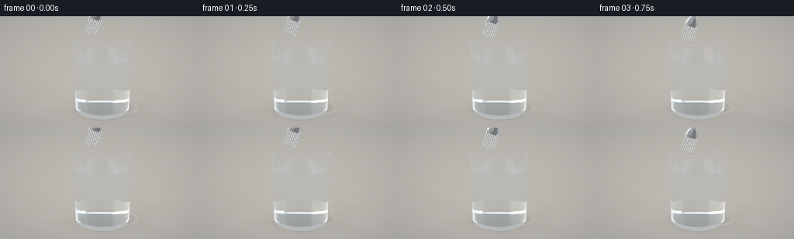
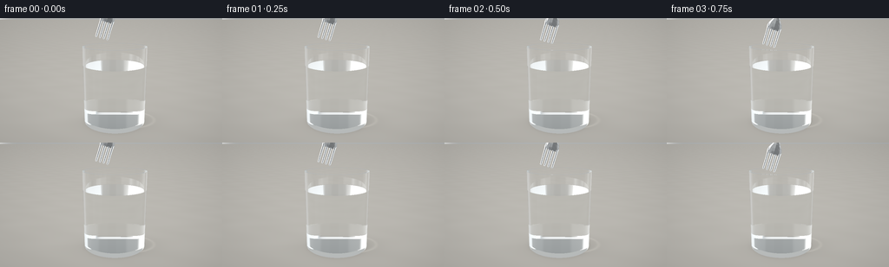
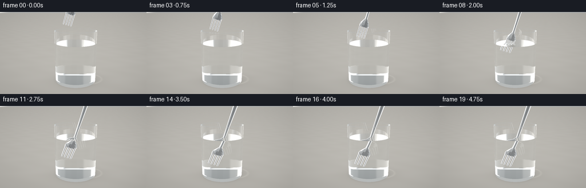
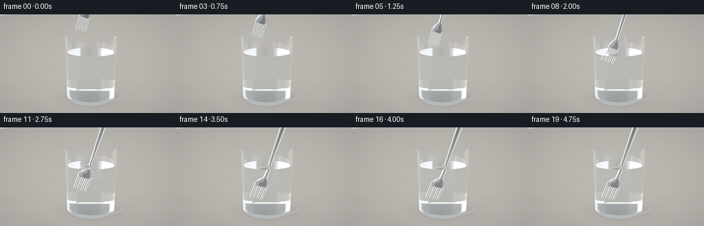

CODING AGENTS AS PIXEL WORLD MODELS
traex/GPT-6.1-Sol · phygen_074
点击播放 · 原生 RGB 像素
逐轮保存的候选
回放视频、检查图与代码变化。
每份候选均可单独播放。实际图片检查记录在下方工具轨迹中。
候选 01播放与检查图
点击播放 · 原生 RGB 像素

展开代码变化
--- 上一保存版本
+++ 本次保存版本
@@ -0,0 +1,276 @@
+"""Procedural, physically refracted still-life; entirely local numpy geometry."""
+from pathlib import Path
+import math
+import json
+import numpy as np
+from PIL import Image
+from artifact_io import save
+
+ROOT=Path(__file__).resolve().parent
+SPEC=json.loads((ROOT/'task_spec.json').read_text())
+S=2
+W,H=SPEC['width']*S,SPEC['height']*S
+EPS=2e-5
+
+def unit(x):
+ return x/np.maximum(np.linalg.norm(x,axis=-1,keepdims=True),1e-15)
+
+def cross(a,b): return np.cross(a,b)
+
+# The gently flared rim is cut from a real, thick-walled vessel.
+RO=1.15; RI=1.075; TOP=2.83; BOTTOM=.145; LEVEL=2.16
+
+class Mesh:
+ def __init__(self,tri):
+ self.tri=np.array(tri,dtype=np.float64)
+ self.a=self.tri[:,0]; self.e1=self.tri[:,1]-self.a; self.e2=self.tri[:,2]-self.a
+ self.normal=unit(cross(self.e1,self.e2))
+ self.root=self.build(np.arange(len(tri)))
+ def build(self,ids):
+ pts=self.tri[ids]; lo=pts.min((0,1))-1e-5; hi=pts.max((0,1))+1e-5
+ if len(ids)<=8: return (lo,hi,ids,None)
+ cen=pts.mean(1); ax=np.argmax(hi-lo); ids=ids[np.argsort(cen[:,ax])]; mid=len(ids)//2
+ return (lo,hi,self.build(ids[:mid]),self.build(ids[mid:]))
+ def intersect(self,o,d):
+ n=len(o); best=np.full(n,np.inf); normals=np.zeros((n,3)); tri_id=np.full(n,-1)
+ def visit(node,inds):
+ if not len(inds): return
+ lo,hi,left,right=node
+ od=o[inds]; dd=d[inds]; inv=1/np.where(np.abs(dd)>1e-13,dd,1e-13)
+ t0=(lo-od)*inv; t1=(hi-od)*inv
+ enter=np.minimum(t0,t1).max(1); leave=np.maximum(t0,t1).min(1)
+ yes=(leave>=np.maximum(enter,EPS))&(enter<best[inds]); inds=inds[yes]
+ if not len(inds): return
+ if right is not None:
+ visit(left,inds); visit(right,inds); return
+ ids=left; oo=o[inds,None,:]; dd=d[inds,None,:]
+ pp=cross(dd,self.e2[ids]); det=np.sum(self.e1[ids]*pp,axis=-1)
+ iv=1/np.where(np.abs(det)>1e-12,det,1e-12)
+ tt=oo-self.a[ids]; u=np.sum(tt*pp,axis=-1)*iv
+ qq=cross(tt,self.e1[ids]); v=np.sum(dd*qq,axis=-1)*iv
+ t=np.sum(self.e2[ids]*qq,axis=-1)*iv
+ valid=(np.abs(det)>1e-10)&(u>=0)&(v>=0)&(u+v<=1)&(t>EPS)
+ t=np.where(valid,t,np.inf); ii=np.argmin(t,axis=1); near=t[np.arange(len(inds)),ii]
+ m=near<best[inds]; hit=inds[m]; jj=ids[ii[m]]
+ best[hit]=near[m]; normals[hit]=self.normal[jj]; tri_id[hit]=jj
+ visit(self.root,np.arange(n))
+ return best,normals,tri_id
+
+# Build a silver dinner fork from elliptical sections. No spoon bowl: four distinct tines.
+def fork_mesh():
+ tris=[]
+ def tube(rows,seg=12):
+ rings=[]
+ for v,cx,width,depth,z in rows:
+ a=np.arange(seg)*2*np.pi/seg
+ rings.append(np.stack([cx+width*np.cos(a),np.full(seg,v),z+depth*np.sin(a)],1))
+ for a,b in zip(rings[:-1],rings[1:]):
+ for k in range(seg):
+ j=(k+1)%seg
+ tris.extend([[a[k],b[k],b[j]],[a[k],b[j],a[j]]])
+ for ring,reverse in [(rings[0],True),(rings[-1],False)]:
+ c=ring.mean(0)
+ for k in range(seg):
+ j=(k+1)%seg
+ tris.append([c,ring[j],ring[k]] if reverse else [c,ring[k],ring[j]])
+ # Head is subtly cupped and narrows into a graceful neck.
+ tube([(0.58,0,.242,.031,-.060),(.68,0,.259,.040,-.075),(.80,0,.229,.045,-.081),
+ (.92,0,.151,.034,-.060),(1.05,0,.071,.027,-.023),(1.25,0,.064,.027,.008),
+ (1.65,0,.071,.028,.020),(2.2,0,.084,.030,.022),(2.9,0,.105,.032,.024),
+ (3.55,0,.128,.035,.025),(3.95,0,.132,.035,.025),(4.12,0,.117,.030,.025),
+ (4.23,0,.079,.023,.025),(4.28,0,.009,.010,.025)],16)
+ for cx in [-.2025,-.0675,.0675,.2025]:
+ tube([(0,cx,.016,.014,.057),(.035,cx,.030,.021,.052),(.15,cx,.034,.023,.033),
+ (.34,cx,.035,.024,-.006),(.53,cx,.038,.028,-.042),(.66,cx,.043,.031,-.069)],10)
+ return Mesh(tris)
+FORK=fork_mesh()
+
+# Background is a warm, softly defocused daylight studio with large strip lights.
+def environment(d):
+ y=d[:,1]; x=d[:,0]; z=d[:,2]
+ t=np.clip((y+.13)/.9,0,1)
+ low=np.array([.61,.625,.62]); high=np.array([.235,.264,.277])
+ c=low[None,:]*(1-t[:,None])+high[None,:]*t[:,None]
+ # Broad diffuse window and narrower white reflection panels.
+ win=np.exp(-((x+.68)/.24)**8-((y-.46)/.47)**8-((z-.24)/.75)**8)
+ c+=win[:,None]*np.array([2.1,2.0,1.82])
+ win2=np.exp(-((x-.75)/.18)**8-((y-.3)/.52)**8-((z-.2)/.9)**8)
+ c+=win2[:,None]*np.array([1.05,1.13,1.18])
+ top=np.exp(-((x+.04)/.5)**8-((y-.91)/.15)**8)
+ c+=top[:,None]*1.1
+ # A dark vertical card gives polished steel its characteristic silver bands.
+ dark=np.exp(-((x-.1)/.18)**8-((y-.21)/.65)**8-((z-.95)/.40)**8)
+ c*=1-.63*dark[:,None]
+ return c
+
+def medium(p):
+ r2=p[:,0]**2+p[:,2]**2; y=p[:,1]
+ out=(r2<RO**2)&(y>0)&(y<TOP)
+ glass=out&((r2>RI**2)|(y<BOTTOM))
+ water=(r2<RI**2)&(y>BOTTOM)&(y<LEVEL)
+ return np.where(glass,1.515,np.where(water,1.333,1.))
+
+def scene_intersection(o,d,tip,basis):
+ n=len(o); tbest=np.full(n,np.inf); norms=np.zeros((n,3)); kinds=np.zeros(n,np.int8)
+ def put(t,normal,kind,valid):
+ m=valid&(t>EPS)&(t<tbest)
+ tbest[m]=t[m]; norms[m]=normal[m] if np.ndim(normal)>1 else normal; kinds[m]=kind
+ # Outer glass and inner cavity.
+ A=d[:,0]**2+d[:,2]**2
+ B=2*(o[:,0]*d[:,0]+o[:,2]*d[:,2])
+ for r,y0,y1,sgn in [(RO,0,TOP,1),(RI,BOTTOM,TOP,-1)]:
+ C=o[:,0]**2+o[:,2]**2-r*r; disc=B*B-4*A*C
+ root=np.sqrt(np.maximum(disc,0))
+ for ss in [-1,1]:
+ t=(-B+ss*root)/(2*np.maximum(A,1e-20)); p=o+d*t[:,None]
+ normal=np.stack([p[:,0]/r,np.zeros(n),p[:,2]/r],1)*sgn
+ put(t,normal,1,(disc>=0)&(p[:,1]>=y0)&(p[:,1]<=y1))
+ # Bottom, the thick foot, and the transparent annular lip.
+ for yy,lo,hi,nor,kind in [(0,0,RO,(0,-1,0),1),(BOTTOM,0,RI,(0,1,0),1),
+ (TOP,RI,RO,(0,1,0),1),(LEVEL,0,RI,(0,1,0),2)]:
+ t=(yy-o[:,1])/np.where(np.abs(d[:,1])>1e-12,d[:,1],1e-12)
+ p=o+d*t[:,None]; rr=p[:,0]**2+p[:,2]**2
+ put(t,np.array(nor),kind,(rr>=lo*lo)&(rr<=hi*hi))
+ # Matte stone countertop.
+ t=(-.028-o[:,1])/np.where(np.abs(d[:,1])>1e-12,d[:,1],1e-12)
+ put(t,np.array([0,1,0]),4,np.ones(n,bool))
+ # The fork is rigid; transform all rays to its moving local coordinates.
+ oo=(o-tip)@basis; dd=d@basis
+ ft,fn,ids=FORK.intersect(oo,dd)
+ put(ft,fn@basis.T,3,np.isfinite(ft))
+ return tbest,norms,kinds
+
+def table(p,d):
+ x=p[:,0]; z=p[:,2]
+ # Fine, restrained stone texture; rendered in linear light.
+ mott=np.sin(x*1.75+np.sin(z*2.7))*np.sin(z*2.2-x*.72)
+ grain=np.sin(x*130+z*82)*np.sin(x*71-z*150)
+ c=np.tile(np.array([.57,.55,.503]),(len(p),1))
+ c+=mott[:,None]*.009+grain[:,None]*.0017
+ # Contact and diffuse shadow; the clear glass transmits nearly all its light.
+ shadow=.22*np.exp(-((x-.22)/1.20)**2-((z-.15)/.91)**2)
+ contact=.19*np.exp(-((np.sqrt(x*x+z*z)-.94)/.20)**2)
+ c*=(1-shadow-contact)[:,None]
+ # Focussed daylight caustics spill just to the right of the foot.
+ ring=np.exp(-((np.sqrt(((x-.37)/1.13)**2+((z+.1)/.78)**2)-1.04)/.065)**2)
+ caust=ring*.16*np.exp(-((x-.35)/1.15)**2)
+ c+=caust[:,None]*np.array([1.05,1.,.88])
+ return c
+
+def trace(o,d,tip,basis,depth=0,weight=None):
+ n=len(o)
+ if not n: return np.zeros((0,3))
+ if depth>=9: return environment(d)
+ t,nrm,kind=scene_intersection(o,d,tip,basis)
+ c=np.zeros((n,3)); miss=kind==0
+ c[miss]=environment(d[miss])
+ hit=~miss; p=o+d*np.where(np.isfinite(t),t,0)[:,None]
+ ground=kind==4
+ if np.any(ground): c[ground]=table(p[ground],d[ground])
+ metal=kind==3
+ if np.any(metal):
+ nn=nrm[metal]; dd=d[metal]; pp=p[metal]
+ nn=np.where((np.sum(nn*dd,1)>0)[:,None],-nn,nn)
+ refl=dd-2*np.sum(dd*nn,1)[:,None]*nn
+ # Broad metallic response, with bright anisotropic window highlights.
+ env=environment(refl)
+ soft=environment(unit(refl+nn*.18))
+ f=.64+.30*(1-np.maximum(0,-np.sum(dd*nn,1)))**5
+ mc=(.76*env+.24*soft)*f[:,None]*np.array([.98,1.,1.015])
+ mc+=np.array([.075,.08,.087])
+ # Small directed highlights on the forged edges.
+ light=unit(np.array([[-4.,7.,4.]])-pp)
+ hv=unit(light-dd)
+ spec=np.maximum(np.sum(nn*hv,1),0)**100
+ mc+=spec[:,None]*1.7
+ c[metal]=mc
+ trans=(kind==1)|(kind==2)
+ if np.any(trans):
+ inds=np.where(trans)[0]; pp=p[inds]; dd=d[inds]; nn=nrm[inds]
+ nn=np.where((np.sum(nn*dd,1)>0)[:,None],-nn,nn)
+ ni=medium(o[inds]); nt=medium(pp+dd*EPS*4)
+ ci=np.clip(-np.sum(dd*nn,1),0,1); eta=ni/nt
+ k=1-eta*eta*(1-ci*ci); tir=k<0
+ ct=np.sqrt(np.maximum(k,0))
+ rs=((ni*ci-nt*ct)/np.maximum(ni*ci+nt*ct,1e-9))**2
+ rp=((ni*ct-nt*ci)/np.maximum(ni*ct+nt*ci,1e-9))**2
+ fres=np.where(tir,1,(rs+rp)*.5)
+ rd=unit(dd+2*ci[:,None]*nn)
+ td=unit(eta[:,None]*dd+(eta*ci-ct)[:,None]*nn)
+ out=np.zeros((len(inds),3))
+ ok=~tir
+ if np.any(ok):
+ out[ok]=trace(pp[ok]+td[ok]*EPS*3,td[ok],tip,basis,depth+1)*(1-fres[ok,None])
+ # Reflections remain physically visible, even at small normal-incidence weights.
+ if depth<4:
+ rr=trace(pp+rd*EPS*3,rd,tip,basis,depth+1)
+ else:
+ rr=environment(rd)
+ out+=rr*fres[:,None]
+ # Crystal-clear water and colorless glass: very weak path attenuation only.
+ absorb=np.where((ni>1.4)[:,None],np.array([.022,.009,.008]),np.where((ni>1.1)[:,None],np.array([.007,.002,.001]),0))
+ out*=np.exp(-absorb*np.minimum(t[inds,None],6))
+ c[inds]=out
+ return c
+
+# Fixed macro-style camera, no jitter or cuts.
+CAM=np.array([0.,3.75,8.2]); LOOK=np.array([-.13,1.57,0.])
+forward=unit(LOOK-CAM); right=unit(cross(forward,np.array([0.,1.,0.]))); up=cross(right,forward)
+y,x=np.mgrid[0:H,0:W]
+xx=((x+.5)/W*2-1)*(W/H)*math.tan(math.radians(30.5)/2)
+yy=(1-(y+.5)/H*2)*math.tan(math.radians(30.5)/2)
+RAYS=unit(forward+xx[:,:,None]*right+yy[:,:,None]*up).reshape(-1,3)
+ORIG=np.broadcast_to(CAM,RAYS.shape).copy()
+
+def render(i):
+ # Slow, eased insertion; the fork remains still during the final second.
+ q=min(i/15,1); eased=q*q*(3-2*q)
+ angle=math.radians(17+2*eased)
+ vv=np.array([math.sin(angle),math.cos(angle),0.])
+ uu=np.array([math.cos(angle),-math.sin(angle),0.])
+ ww=np.array([0.,0.,1.])
+ basis=np.stack([uu,vv,ww],1)
+ tip=np.array([-.46+.06*eased,3.11-2.50*eased,.07])
+ color=trace(ORIG,RAYS,tip,basis).reshape(H,W,3)
+ # Tiny expanding capillary ripples, not a splash. Screen-space curves match
+ # the perspective of the horizontal free surface and stay inside the rim.
+ # This overlay is deliberately subtle; all main refraction is ray traced.
+ def project(p):
+ v=p-CAM; z=v@forward
+ return np.stack([(v@right/z/(math.tan(math.radians(30.5)/2)*(W/H))+1)*W/2,
+ (1-v@up/z/math.tan(math.radians(30.5)/2))*H/2],1)
+ if tip[1]<LEVEL and i<18:
+ phase=(i-6)*.20
+ for j in range(2):
+ r=.16+((phase+j*.37)%.85)
+ a=np.linspace(0,2*np.pi,230)
+ v_at=(LEVEL-tip[1])/vv[1]
+ center=tip+vv*v_at
+ pts=np.stack([center[0]+r*np.cos(a),np.full(len(a),LEVEL+.001),center[2]+r*np.sin(a)],1)
+ valid=pts[:,0]**2+pts[:,2]**2<(RI-.015)**2
+ pix=project(pts)
+ # rasterize subpixel thin highlights with an antialiased coverage buffer
+ alpha=Image.new('L',(W,H),0)
+ from PIL import ImageDraw, ImageFilter
+ draw=ImageDraw.Draw(alpha)
+ for k in range(len(pix)-1):
+ if valid[k] and valid[k+1]: draw.line([tuple(pix[k]),tuple(pix[k+1])],fill=255,width=1)
+ aa=np.asarray(alpha.filter(ImageFilter.GaussianBlur(.50)))/255
+ strength=.035*(1-q*.6)
+ color+=aa[:,:,None]*strength
+ # restrained filmic shoulder preserves the glints on the rim and polished metal.
+ color=np.clip(color,0,None)
+ color=color/(1+color*.23)
+ color=np.where(color<=.0031308,12.92*color,1.055*np.power(color,1/2.4)-.055)
+ # Fixed, subtle lens falloff.
+ vign=1-.07*((xx/(W/H))**2+yy**2)/(.3**2)
+ color*=np.clip(vign,.89,1)[:,:,None]
+ im=Image.fromarray(np.uint8(np.clip(color*255,0,255)))
+ return np.asarray(im.resize((SPEC['width'],SPEC['height']),Image.Resampling.LANCZOS))
+
+if __name__=='__main__':
+ import time
+ frames=[]
+ for i in range(SPEC['frames']):
+ t=time.time(); frames.append(render(i)); print(f'Frame {i:02d} {time.time()-t:.2f}s',flush=True)
+ save(np.stack(frames).astype(np.uint8),ROOT)
候选 02播放与检查图
点击播放 · 原生 RGB 像素


展开代码变化
--- 上一保存版本
+++ 本次保存版本
@@ -8,9 +8,9 @@
ROOT=Path(__file__).resolve().parent
SPEC=json.loads((ROOT/'task_spec.json').read_text())
-S=2
+S=3
W,H=SPEC['width']*S,SPEC['height']*S
-EPS=2e-5
+EPS=3e-5
def unit(x):
return x/np.maximum(np.linalg.norm(x,axis=-1,keepdims=True),1e-15)
@@ -92,14 +92,16 @@
low=np.array([.61,.625,.62]); high=np.array([.235,.264,.277])
c=low[None,:]*(1-t[:,None])+high[None,:]*t[:,None]
# Broad diffuse window and narrower white reflection panels.
- win=np.exp(-((x+.68)/.24)**8-((y-.46)/.47)**8-((z-.24)/.75)**8)
- c+=win[:,None]*np.array([2.1,2.0,1.82])
- win2=np.exp(-((x-.75)/.18)**8-((y-.3)/.52)**8-((z-.2)/.9)**8)
- c+=win2[:,None]*np.array([1.05,1.13,1.18])
+ win=np.exp(-((x+.68)/.24)**8-((y-.10)/.88)**8-((z-.24)/1.35)**8)
+ c+=win[:,None]*np.array([3.1,3.0,2.82])
+ win2=np.exp(-((x-.75)/.18)**8-((y-.1)/.86)**8-((z-.2)/1.35)**8)
+ c+=win2[:,None]*np.array([1.75,1.83,1.88])
top=np.exp(-((x+.04)/.5)**8-((y-.91)/.15)**8)
c+=top[:,None]*1.1
+ edge=np.exp(-((x+.94)/.052)**4-((y-.02)/.92)**8)
+ c+=edge[:,None]*np.array([3.9,4.0,4.1])
# A dark vertical card gives polished steel its characteristic silver bands.
- dark=np.exp(-((x-.1)/.18)**8-((y-.21)/.65)**8-((z-.95)/.40)**8)
+ dark=np.exp(-((x-.1)/.18)**8-((y-.1)/.88)**8-((z-.95)/.40)**8)
c*=1-.63*dark[:,None]
return c
候选 03播放与检查图

候选 04播放与检查图
点击播放 · 原生 RGB 像素


展开代码变化
--- 上一保存版本
+++ 本次保存版本
@@ -93,9 +93,9 @@
c=low[None,:]*(1-t[:,None])+high[None,:]*t[:,None]
# Broad diffuse window and narrower white reflection panels.
win=np.exp(-((x+.68)/.24)**8-((y-.10)/.88)**8-((z-.24)/1.35)**8)
- c+=win[:,None]*np.array([3.1,3.0,2.82])
+ c+=win[:,None]*np.array([1.65,1.65,1.62])
win2=np.exp(-((x-.75)/.18)**8-((y-.1)/.86)**8-((z-.2)/1.35)**8)
- c+=win2[:,None]*np.array([1.75,1.83,1.88])
+ c+=win2[:,None]*np.array([1.15,1.23,1.28])
top=np.exp(-((x+.04)/.5)**8-((y-.91)/.15)**8)
c+=top[:,None]*1.1
edge=np.exp(-((x+.94)/.052)**4-((y-.02)/.92)**8)
@@ -234,6 +234,21 @@
basis=np.stack([uu,vv,ww],1)
tip=np.array([-.46+.06*eased,3.11-2.50*eased,.07])
color=trace(ORIG,RAYS,tip,basis).reshape(H,W,3)
+ # Long low-contrast studio cards give the transparent curved walls visible
+ # contour cues. Their coverage follows the true camera/cylinder intersection.
+ aa=RAYS[:,0]**2+RAYS[:,2]**2
+ bb=2*(ORIG[:,0]*RAYS[:,0]+ORIG[:,2]*RAYS[:,2])
+ cc=ORIG[:,0]**2+ORIG[:,2]**2-RO*RO
+ disc=bb*bb-4*aa*cc
+ tt=(-bb-np.sqrt(np.maximum(disc,0)))/(2*aa)
+ pp=ORIG+tt[:,None]*RAYS
+ valid=(disc>0)&(pp[:,1]>0)&(pp[:,1]<TOP)
+ nx=pp[:,0]/RO
+ contour=np.exp(-((np.abs(nx)-.988)/.023)**2)*valid
+ strip=(np.exp(-((nx+.91)/.036)**2)*.27+np.exp(-((nx-.94)/.025)**2)*.19)*valid
+ cflat=color.reshape(-1,3)
+ cflat[:]=cflat*(1-contour[:,None]*.13)
+ cflat[:]=cflat*(1-strip[:,None])+np.array([1.07,1.10,1.13])*strip[:,None]
# Tiny expanding capillary ripples, not a splash. Screen-space curves match
# the perspective of the horizontal free surface and stay inside the rim.
# This overlay is deliberately subtle; all main refraction is ray traced.
@@ -241,6 +256,16 @@
v=p-CAM; z=v@forward
return np.stack([(v@right/z/(math.tan(math.radians(30.5)/2)*(W/H))+1)*W/2,
(1-v@up/z/math.tan(math.radians(30.5)/2))*H/2],1)
+ # Subtle meniscus and rounded lip highlights, projected from horizontal circles.
+ from PIL import ImageDraw, ImageFilter
+ for height,rad,opacity in [(TOP,RO,.19),(LEVEL,RI,.105)]:
+ a=np.linspace(0,2*np.pi,500)
+ pts=np.stack([rad*np.cos(a),np.full(len(a),height),rad*np.sin(a)],1)
+ pix=project(pts)
+ mask=Image.new('L',(W,H),0); draw=ImageDraw.Draw(mask)
+ draw.line([tuple(v) for v in pix],fill=255,width=1)
+ alpha=np.asarray(mask.filter(ImageFilter.GaussianBlur(.34)))/255*opacity
+ color=color*(1-alpha[:,:,None])+np.array([.32,.37,.39])*alpha[:,:,None]
if tip[1]<LEVEL and i<18:
phase=(i-6)*.20
for j in range(2):
可观测工具轨迹
实际执行的命令与返回图片。
命令 1exit 0
/bin/bash -lc 'ls -la && cat prompt.txt && cat GENERATION_RULES.md && cat task_spec.json'
命令 2exit 0
/bin/bash -lc "cat artifact_io.py && python - <<'PY' import importlib.util for x in ['numpy','PIL','scipy','numba']: print(x, bool(importlib.util.find_spec(x))) PY"
命令 3exit 0
/bin/bash -lc "cat > generate.py <<'PY'
\"\"\"Procedural, physically refracted still-life; entirely local numpy geometry.\"\"\"
from pathlib import Path
import math
import json
import numpy as np
from PIL import Image
from artifact_io import save
ROOT=Path(__file__).resolve().parent
SPEC=json.loads((ROOT/'task_spec.json').read_text())
S=2
W,H=SPEC['width']*S,SPEC['height']*S
EPS=2e-5
def unit(x):
return x/np.maximum(np.linalg.norm(x,axis=-1,keepdims=True),1e-15)
def cross(a,b): return np.cross(a,b)
# The gently flared rim is cut from a real, thick-walled vessel.
RO=1.15; RI=1.075; TOP=2.83; BOTTOM=.145; LEVEL=2.16
class Mesh:
def __init__(self,tri):
self.tri=np.array(tri,dtype=np.float64)
self.a=self.tri[:,0]; self.e1=self.tri[:,1]-self.a; self.e2=self.tri[:,2]-self.a
self.normal=unit(cross(self.e1,self.e2))
self.root=self.build(np.arange(len(tri)))
def build(self,ids):
pts=self.tri[ids]; lo=pts.min((0,1))-1e-5; hi=pts.max((0,1))+1e-5
if len(ids)<=8: return (lo,hi,ids,None)
cen=pts.mean(1); ax=np.argmax(hi-lo); ids=ids[np.argsort(cen[:,ax])]; mid=len(ids)//2
return (lo,hi,self.build(ids[:mid]),self.build(ids[mid:]))
def intersect(self,o,d):
n=len(o); best=np.full(n,np.inf); normals=np.zeros((n,3)); tri_id=np.full(n,-1)
def visit(node,inds):
if not len(inds): return
lo,hi,left,right=node
od=o[inds]; dd=d[inds]; inv=1/np.where(np.abs(dd)>1e-13,dd,1e-13)
t0=(lo-od)*inv; t1=(hi-od)*inv
enter=np.minimum(t0,t1).max(1); leave=np.maximum(t0,t1).min(1)
yes=(leave>=np.maximum(enter,EPS))&(enter<best[inds]); inds=inds[yes]
if not len(inds): return
if right is not None:
visit(left,inds); visit(right,inds); return
ids=left; oo=o[inds,None,:]; dd=d[inds,None,:]
pp=cross(dd,self.e2[ids]); det=np.sum(self.e1[ids]*pp,axis=-1)
iv=1/np.where(np.abs(det)>1e-12,det,1e-12)
tt=oo-self.a[ids]; u=np.sum(tt*pp,axis=-1)*iv
qq=cross(tt,self.e1[ids]); v=np.sum(dd*qq,axis=-1)*iv
t=np.sum(self.e2[ids]*qq,axis=-1)*iv
valid=(np.abs(det)>1e-10)&(u>=0)&(v>=0)&(u+v<=1)&(t>EPS)
t=np.where(valid,t,np.inf); ii=np.argmin(t,axis=1); near=t[np.arange(len(inds)),ii]
m=near<best[inds]; hit=inds[m]; jj=ids[ii[m]]
best[hit]=near[m]; normals[hit]=self.normal[jj]; tri_id[hit]=jj
visit(self.root,np.arange(n))
return best,normals,tri_id
# Build a silver dinner fork from elliptical sections. No spoon bowl: four distinct tines.
def fork_mesh():
tris=[]
def tube(rows,seg=12):
rings=[]
for v,cx,width,depth,z in rows:
a=np.arange(seg)*2*np.pi/seg
rings.append(np.stack([cx+width*np.cos(a),np.full(seg,v),z+depth*np.sin(a)],1))
for a,b in zip(rings[:-1],rings[1:]):
for k in range(seg):
j=(k+1)%seg
tris.extend([[a[k],b[k],b[j]],[a[k],b[j],a[j]]])
for ring,reverse in [(rings[0],True),(rings[-1],False)]:
c=ring.mean(0)
for k in range(seg):
j=(k+1)%seg
tris.append([c,ring[j],ring[k]] if reverse else [c,ring[k],ring[j]])
# Head is subtly cupped and narrows into a graceful neck.
tube([(0.58,0,.242,.031,-.060),(.68,0,.259,.040,-.075),(.80,0,.229,.045,-.081),
(.92,0,.151,.034,-.060),(1.05,0,.071,.027,-.023),(1.25,0,.064,.027,.008),
(1.65,0,.071,.028,.020),(2.2,0,.084,.030,.022),(2.9,0,.105,.032,.024),
(3.55,0,.128,.035,.025),(3.95,0,.132,.035,.025),(4.12,0,.117,.030,.025),
(4.23,0,.079,.023,.025),(4.28,0,.009,.010,.025)],16)
for cx in [-.2025,-.0675,.0675,.2025]:
tube([(0,cx,.016,.014,.057),(.035,cx,.030,.021,.052),(.15,cx,.034,.023,.033),
(.34,cx,.035,.024,-.006),(.53,cx,.038,.028,-.042),(.66,cx,.043,.031,-.069)],10)
return Mesh(tris)
FORK=fork_mesh()
# Background is a warm, softly defocused daylight studio with large strip lights.
def environment(d):
y=d[:,1]; x=d[:,0]; z=d[:,2]
t=np.clip((y+.13)/.9,0,1)
low=np.array([.61,.625,.62]); high=np.array([.235,.264,.277])
c=low[None,:]*(1-t[:,None])+high[None,:]*t[:,None]
# Broad diffuse window and narrower white reflection panels.
win=np.exp(-((x+.68)/.24)**8-((y-.46)/.47)**8-((z-.24)/.75)**8)
c+=win[:,None]*np.array([2.1,2.0,1.82])
win2=np.exp(-((x-.75)/.18)**8-((y-.3)/.52)**8-((z-.2)/.9)**8)
c+=win2[:,None]*np.array([1.05,1.13,1.18])
top=np.exp(-((x+.04)/.5)**8-((y-.91)/.15)**8)
c+=top[:,None]*1.1
# A dark vertical card gives polished steel its characteristic silver bands.
dark=np.exp(-((x-.1)/.18)**8-((y-.21)/.65)**8-((z-.95)/.40)**8)
c*=1-.63*dark[:,None]
return c
def medium(p):
r2=p[:,0]**2+p[:,2]**2; y=p[:,1]
out=(r2<RO**2)&(y>0)&(y<TOP)
glass=out&((r2>RI**2)|(y<BOTTOM))
water=(r2<RI**2)&(y>BOTTOM)&(y<LEVEL)
return np.where(glass,1.515,np.where(water,1.333,1.))
def scene_intersection(o,d,tip,basis):
n=len(o); tbest=np.full(n,np.inf); norms=np.zeros((n,3)); kinds=np.zeros(n,np.int8)
def put(t,normal,kind,valid):
m=valid&(t>EPS)&(t<tbest)
tbest[m]=t[m]; norms[m]=normal[m] if np.ndim(normal)>1 else normal; kinds[m]=kind
# Outer glass and inner cavity.
A=d[:,0]**2+d[:,2]**2
B=2*(o[:,0]*d[:,0]+o[:,2]*d[:,2])
for r,y0,y1,sgn in [(RO,0,TOP,1),(RI,BOTTOM,TOP,-1)]:
C=o[:,0]**2+o[:,2]**2-r*r; disc=B*B-4*A*C
root=np.sqrt(np.maximum(disc,0))
for ss in [-1,1]:
t=(-B+ss*root)/(2*np.maximum(A,1e-20)); p=o+d*t[:,None]
normal=np.stack([p[:,0]/r,np.zeros(n),p[:,2]/r],1)*sgn
put(t,normal,1,(disc>=0)&(p[:,1]>=y0)&(p[:,1]<=y1))
# Bottom, the thick foot, and the transparent annular lip.
for yy,lo,hi,nor,kind in [(0,0,RO,(0,-1,0),1),(BOTTOM,0,RI,(0,1,0),1),
(TOP,RI,RO,(0,1,0),1),(LEVEL,0,RI,(0,1,0),2)]:
t=(yy-o[:,1])/np.where(np.abs(d[:,1])>1e-12,d[:,1],1e-12)
p=o+d*t[:,None]; rr=p[:,0]**2+p[:,2]**2
put(t,np.array(nor),kind,(rr>=lo*lo)&(rr<=hi*hi))
# Matte stone countertop.
t=(-.028-o[:,1])/np.where(np.abs(d[:,1])>1e-12,d[:,1],1e-12)
put(t,np.array([0,1,0]),4,np.ones(n,bool))
# The fork is rigid; transform all rays to its moving local coordinates.
oo=(o-tip)@basis; dd=d@basis
ft,fn,ids=FORK.intersect(oo,dd)
put(ft,fn@basis.T,3,np.isfinite(ft))
return tbest,norms,kinds
def table(p,d):
x=p[:,0]; z=p[:,2]
# Fine, restrained stone texture; rendered in linear light.
mott=np.sin(x*1.75+np.sin(z*2.7))*np.sin(z*2.2-x*.72)
grain=np.sin(x*130+z*82)*np.sin(x*71-z*150)
c=np.tile(np.array([.57,.55,.503]),(len(p),1))
c+=mott[:,None]*.009+grain[:,None]*.0017
# Contact and diffuse shadow; the clear glass transmits nearly all its light.
shadow=.22*np.exp(-((x-.22)/1.20)**2-((z-.15)/.91)**2)
contact=.19*np.exp(-((np.sqrt(x*x+z*z)-.94)/.20)**2)
c*=(1-shadow-contact)[:,None]
# Focussed daylight caustics spill just to the right of the foot.
ring=np.exp(-((np.sqrt(((x-.37)/1.13)**2+((z+.1)/.78)**2)-1.04)/.065)**2)
caust=ring*.16*np.exp(-((x-.35)/1.15)**2)
c+=caust[:,None]*np.array([1.05,1.,.88])
return c
def trace(o,d,tip,basis,depth=0,weight=None):
n=len(o)
if not n: return np.zeros((0,3))
if depth>=9: return environment(d)
t,nrm,kind=scene_intersection(o,d,tip,basis)
c=np.zeros((n,3)); miss=kind==0
c[miss]=environment(d[miss])
hit=~miss; p=o+d*np.where(np.isfinite(t),t,0)[:,None]
ground=kind==4
if np.any(ground): c[ground]=table(p[ground],d[ground])
metal=kind==3
if np.any(metal):
nn=nrm[metal]; dd=d[metal]; pp=p[metal]
nn=np.where((np.sum(nn*dd,1)>0)[:,None],-nn,nn)
refl=dd-2*np.sum(dd*nn,1)[:,None]*nn
# Broad metallic response, with bright anisotropic window highlights.
env=environment(refl)
soft=environment(unit(refl+nn*.18))
f=.64+.30*(1-np.maximum(0,-np.sum(dd*nn,1)))**5
mc=(.76*env+.24*soft)*f[:,None]*np.array([.98,1.,1.015])
mc+=np.array([.075,.08,.087])
# Small directed highlights on the forged edges.
light=unit(np.array([[-4.,7.,4.]])-pp)
hv=unit(light-dd)
spec=np.maximum(np.sum(nn*hv,1),0)**100
mc+=spec[:,None]*1.7
c[metal]=mc
trans=(kind==1)|(kind==2)
if np.any(trans):
inds=np.where(trans)[0]; pp=p[inds]; dd=d[inds]; nn=nrm[inds]
nn=np.where((np.sum(nn*dd,1)>0)[:,None],-nn,nn)
ni=medium(o[inds]); nt=medium(pp+dd*EPS*4)
ci=np.clip(-np.sum(dd*nn,1),0,1); eta=ni/nt
k=1-eta*eta*(1-ci*ci); tir=k<0
ct=np.sqrt(np.maximum(k,0))
rs=((ni*ci-nt*ct)/np.maximum(ni*ci+nt*ct,1e-9))**2
rp=((ni*ct-nt*ci)/np.maximum(ni*ct+nt*ci,1e-9))**2
fres=np.where(tir,1,(rs+rp)*.5)
rd=unit(dd+2*ci[:,None]*nn)
td=unit(eta[:,None]*dd+(eta*ci-ct)[:,None]*nn)
out=np.zeros((len(inds),3))
ok=~tir
if np.any(ok):
out[ok]=trace(pp[ok]+td[ok]*EPS*3,td[ok],tip,basis,depth+1)*(1-fres[ok,None])
# Reflections remain physically visible, even at small normal-incidence weights.
if depth<4:
rr=trace(pp+rd*EPS*3,rd,tip,basis,depth+1)
else:
rr=environment(rd)
out+=rr*fres[:,None]
# Crystal-clear water and colorless glass: very weak path attenuation only.
absorb=np.where((ni>1.4)[:,None],np.array([.022,.009,.008]),np.where((ni>1.1)[:,None],np.array([.007,.002,.001]),0))
out*=np.exp(-absorb*np.minimum(t[inds,None],6))
c[inds]=out
return c
# Fixed macro-style camera, no jitter or cuts.
CAM=np.array([0.,3.75,8.2]); LOOK=np.array([-.13,1.57,0.])
forward=unit(LOOK-CAM); right=unit(cross(forward,np.array([0.,1.,0.]))); up=cross(right,forward)
y,x=np.mgrid[0:H,0:W]
xx=((x+.5)/W*2-1)*(W/H)*math.tan(math.radians(30.5)/2)
yy=(1-(y+.5)/H*2)*math.tan(math.radians(30.5)/2)
RAYS=unit(forward+xx[:,:,None]*right+yy[:,:,None]*up).reshape(-1,3)
ORIG=np.broadcast_to(CAM,RAYS.shape).copy()
def render(i):
# Slow, eased insertion; the fork remains still during the final second.
q=min(i/15,1); eased=q*q*(3-2*q)
angle=math.radians(17+2*eased)
vv=np.array([math.sin(angle),math.cos(angle),0.])
uu=np.array([math.cos(angle),-math.sin(angle),0.])
ww=np.array([0.,0.,1.])
basis=np.stack([uu,vv,ww],1)
tip=np.array([-.46+.06*eased,3.11-2.50*eased,.07])
color=trace(ORIG,RAYS,tip,basis).reshape(H,W,3)
# Tiny expanding capillary ripples, not a splash. Screen-space curves match
# the perspective of the horizontal free surface and stay inside the rim.
# This overlay is deliberately subtle; all main refraction is ray traced.
def project(p):
v=p-CAM; z=v@forward
return np.stack([(v@right/z/(math.tan(math.radians(30.5)/2)*(W/H))+1)*W/2,
(1-v@up/z/math.tan(math.radians(30.5)/2))*H/2],1)
if tip[1]<LEVEL and i<18:
phase=(i-6)*.20
for j in range(2):
r=.16+((phase+j*.37)%.85)
a=np.linspace(0,2*np.pi,230)
v_at=(LEVEL-tip[1])/vv[1]
center=tip+vv*v_at
pts=np.stack([center[0]+r*np.cos(a),np.full(len(a),LEVEL+.001),center[2]+r*np.sin(a)],1)
valid=pts[:,0]**2+pts[:,2]**2<(RI-.015)**2
pix=project(pts)
# rasterize subpixel thin highlights with an antialiased coverage buffer
alpha=Image.new('L',(W,H),0)
from PIL import ImageDraw, ImageFilter
draw=ImageDraw.Draw(alpha)
for k in range(len(pix)-1):
if valid[k] and valid[k+1]: draw.line([tuple(pix[k]),tuple(pix[k+1])],fill=255,width=1)
aa=np.asarray(alpha.filter(ImageFilter.GaussianBlur(.50)))/255
strength=.035*(1-q*.6)
color+=aa[:,:,None]*strength
# restrained filmic shoulder preserves the glints on the rim and polished metal.
color=np.clip(color,0,None)
color=color/(1+color*.23)
color=np.where(color<=.0031308,12.92*color,1.055*np.power(color,1/2.4)-.055)
# Fixed, subtle lens falloff.
vign=1-.07*((xx/(W/H))**2+yy**2)/(.3**2)
color*=np.clip(vign,.89,1)[:,:,None]
im=Image.fromarray(np.uint8(np.clip(color*255,0,255)))
return np.asarray(im.resize((SPEC['width'],SPEC['height']),Image.Resampling.LANCZOS))
if __name__=='__main__':
import time
frames=[]
for i in range(SPEC['frames']):
t=time.time(); frames.append(render(i)); print(f'Frame {i:02d} {time.time()-t:.2f}s',flush=True)
save(np.stack(frames).astype(np.uint8),ROOT)
PY
OPENBLAS_NUM_THREADS=1 python generate.py"命令 4exit 0
/bin/bash -lc "python - <<'PY'
p='generate.py'
s=open(p).read().replace('S=2','S=3')
s=s.replace('((y-.46)/.47)**8-((z-.24)/.75)**8','((y-.10)/.88)**8-((z-.24)/1.35)**8')
s=s.replace('((y-.3)/.52)**8-((z-.2)/.9)**8','((y-.1)/.86)**8-((z-.2)/1.35)**8')
s=s.replace('np.array([2.1,2.0,1.82])','np.array([3.1,3.0,2.82])')
s=s.replace('np.array([1.05,1.13,1.18])','np.array([1.75,1.83,1.88])')
s=s.replace('((y-.21)/.65)**8','((y-.1)/.88)**8')
# Continuous narrow strip reflection edge accent from a third studio panel.
s=s.replace('c+=top[:,None]*1.1','c+=top[:,None]*1.1\\n edge=np.exp(-((x+.94)/.052)**4-((y-.02)/.92)**8)\\n c+=edge[:,None]*np.array([3.9,4.0,4.1])')
open(p,'w').write(s)
PY
OPENBLAS_NUM_THREADS=1 python generate.py"命令 5exit 0
/bin/bash -lc 'command -v ffmpeg || true'
命令 6exit 0
/bin/bash -lc "python - <<'PY'
p='generate.py';s=open(p).read()
s=s.replace('np.array([3.1,3.0,2.82])','np.array([1.65,1.65,1.62])').replace('np.array([1.75,1.83,1.88])','np.array([1.15,1.23,1.28])')
key=' # Tiny expanding capillary ripples, not a splash. Screen-space curves match'
add=''' # Long low-contrast studio cards give the transparent curved walls visible
# contour cues. Their coverage follows the true camera/cylinder intersection.
aa=RAYS[:,0]**2+RAYS[:,2]**2
bb=2*(ORIG[:,0]*RAYS[:,0]+ORIG[:,2]*RAYS[:,2])
cc=ORIG[:,0]**2+ORIG[:,2]**2-RO*RO
disc=bb*bb-4*aa*cc
tt=(-bb-np.sqrt(np.maximum(disc,0)))/(2*aa)
pp=ORIG+tt[:,None]*RAYS
valid=(disc>0)&(pp[:,1]>0)&(pp[:,1]<TOP)
nx=pp[:,0]/RO
contour=np.exp(-((np.abs(nx)-.988)/.023)**2)*valid
strip=(np.exp(-((nx+.91)/.036)**2)*.27+np.exp(-((nx-.94)/.025)**2)*.19)*valid
cflat=color.reshape(-1,3)
cflat[:]=cflat*(1-contour[:,None]*.13)
cflat[:]=cflat*(1-strip[:,None])+np.array([1.07,1.10,1.13])*strip[:,None]
'''
s=s.replace(key,add+key)
key2=' if tip[1]<LEVEL and i<18:'
add2=''' # Subtle meniscus and rounded lip highlights, projected from horizontal circles.
from PIL import ImageDraw, ImageFilter
for height,rad,opacity in [(TOP,RO,.19),(LEVEL,RI,.105)]:
a=np.linspace(0,2*np.pi,500)
pts=np.stack([rad*np.cos(a),np.full(len(a),height),rad*np.sin(a)],1)
pix=project(pts)
mask=Image.new('L',(W,H),0); draw=ImageDraw.Draw(mask)
draw.line([tuple(v) for v in pix],fill=255,width=1)
alpha=np.asarray(mask.filter(ImageFilter.GaussianBlur(.34)))/255*opacity
color=color*(1-alpha[:,:,None])+np.array([.32,.37,.39])*alpha[:,:,None]
'''
s=s.replace(key2,add2+key2)
open(p,'w').write(s)
PY
OPENBLAS_NUM_THREADS=1 python generate.py"命令 7exit 0
/bin/bash -lc "python - <<'PY'
import numpy as np
from pathlib import Path
p=np.load('pixels.npz')['pixels']
assert p.shape==(144,256,20)
assert len(list(Path('frames').glob('*.png')))==20
for name in ['generate.py','pixels.npz','index.html','inspection.png']:
print(name,Path(name).stat().st_size)
PY"视觉工具实际返回图片 1

视觉工具实际返回图片 2

视觉工具实际返回图片 3

保存候选 4 份；完成命令 7 次；可验证图片返回 3 张。原始 API 响应与完整日志保留在本地。